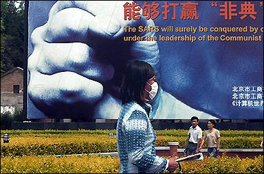
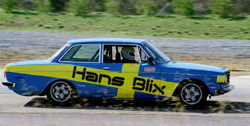

Apparently, Dusty Baker, the manager for the Chicago Cubs baseball team, made a comment about race and heat and is, um, catching heat for it. Now, I don’t know about you, but his comments — or at least the gist of the idea — make sense to me. People brought up in warmer climates are going to be used to higher temperatures. The reason white people are white is because over many, many generations, they lived in the colder areas of the earth where the sun was not as direct, hence not needing the melanin in their skin. Blacks and latinos lived closer to the equator in hotter areas of the world. Luckily, ol’ Dusty is sticking to his guns and not apologizing.
¨

(AFP/File/Frederic J. Brown)
“the” SARS.
¨

Hey you kids! Get off the DOJ’s lawn!
Reply with your caption in comments. winner will be given a sharp poke in the tookus.
¨

Huh? Wha? There is a “War on Critics” now? I have *got* to start keeping up with these wars.
update: Oh, wait. This is a far more accurate headline…

¨

Hey, it’s Cockeyed.com appreciation day! First off,
The Hans Blix Ultimate Fanpage. Next — Cockerham’s Special Report on Those Annoying Work-From-Home signs. Finally, but certainly not leastly — How Much is Inside?
There is a ridiculous amount of content on Cockeyed.com if you can find it as the navigation is often confusing, but keep digging!
In case you were wondering, Hans Blix is not actually a rally driver.
¨
You may or may not remember me linking to a blog called Dear Raed written by a purported Iraqi citizen under the moniker of “Salam Pax” a while back, but for those of you who do…
Salam Pax’s real identity was quite a mystery — was he a CIA plant? A real citizen? Something else? Well, it turns out that he is very real, and a very real Iraqi citizen — at least according to this story by Peter Maass on Slate. It doesn’t give away Salam’s real name, but certainly lays out some backstory on him and his connection to Maass. Further, The Guardian UK will be publishing a column by Salam Pax fortnightly (every two weeks, for those of you who didn’t know that — and you know who you are). The first column appears here. The Guardian also has a good interview with Pax here.
¨
Justin frankel wrote WinAMP, the worlds most popular MP3 player. He also wrote Gnutella, an intriguing decentralized file-sharing system that became the basis for Morpheus, BearShare, etc. He works for Nullsoft, which is owned by AOL. He recently wrote and semi-published a cool little instant-messaging app called W.A.S.T.E.. It was all open-source goodness, but apparently AOL didn’t like that, and removed the release from their servers. An encrypted, non-centralized instant messaging app competing with AIM? NEVER!
Well, it would seem that frankel has had enough. i can’t say i blame him. i’m sure there are plenty of people out there that would respect his wishes and allow him to write code at his will.
¨
Ye olde Federal Communications Commission is set to vote on easing media ownership rules today. They are considering removing the 28-year-old ban on a single company owning both a newspaper and a television or radio station in the same city (small cities are exempted). Other changes include increasing the percentage of the national audience a single company may reach from 35% to 45%, and allowing a single company to own up to 3 channels in a regional market.
The folks that come out to protest this thing are as varied as I’ve ever seen — the NRA standing next to womens groups, etc. They come out in bulk, too — apparently both the email and voice mail systems were crashed at the FCC due to extremely high volume. Something on the order of 500,000 piece of voice and email.
Is it just me, or most of these rules in place because of the ignorance of most Americans? I’m not quite sure on that position, though. Time and time again, it has been shown that if you throw enough information at a person (or a society) that they will be blindsided. When the market feeds on the consumer (as it does in most broadcasting), the free market system becomes a bit like a meat market. The average citizen doesn’t have the time or energy to keep up with the varied, shifting winds of media companies. I’m not crazy about constricting business to safeguard our freedom of speech, but in this case, I think it is much needed. A monopoly of steel, oil, or technology is one thing — but a monopoly of information is the most dangerous of all.
a simple chart of proposed rule changes (by the way, that existing 35% cap — yeah, Viacom and News Corp (FOX, et al) are already over the limit with 39% and 38%, respectively.
Oh, and Clear Channel owns 1200 radio stations nation-wide after radio deregulation, and you wonder why radio sucks? Why don’t you just go and ask Rocky and Troy.
¨
There has been a story about cell-phone related deaths floating around. This estimation that 2,600 people died last year in cell-phone related car accidents comes from a mathematical model from the Harvard Center for Risk Analysis. Their summary of the report can be found here.
It seems to me that we, as a people are more terrible than the most terrible terrorist. Our culture is own terrorism. We live sedentary lives, we eat until we die, we smoke too much, we war against drugs while we advise that everyone “have a designated driver” (btw, alcohol caused 12,000+ deaths last year in car accidents). Our government speaks of peace in the same breath that they threaten war. Jail journalists that leak information, but would you mind printing this threat to Sadaam? Thanks.
Sheesh. I can’t help but think that the same moral ambiguity that started the anti-slavery abolotionist movement in the 1800′s is being manifested now. A nation, birthed in the ideas of freedom allowed for the continuance of slaver. How do we, a nation that prides itself on freedom, cope with being so contradictory — not only to other countries, but to ourselves?
update: this just in! eat up, fatties! Meanwhile, when will White Castle make soy-burgers?
Kelly and I have quite a few driveway moments. NPR is great.
Finally, I’d like to give a shout out to Jessica for chipping in some of her no-doubt precious time to the Distributed Proofreading project. She did five pages yesterday! “It’s fun!” she said, I think.
¨